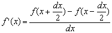

fx-3650P及SC185功能比較
注意SC185在2007年8月29日已重新推出新版本SC185計算機，經測試發現最新個版本已修正程式自動消失及複數計算問題，所以大家可以較放心購買這部計算機。舊文的內容亦作出更新，新加入的內容(包括分數失效 及Rnd功能問題)以暗紅色的文字表示。
雖然 Casio fx-3650P/3950P的功能與Truly SC185的功能及操作差不多完全一樣，但亦有不同的處，fx-3650P的一些潛在問題，在SC185計數機又會否同樣出現， 另外SC185亦會否有問題存在，我就兩部計數做了一些的測試以供大定參考。
注意: 以下測試的Casio fx-3650P計數機的自我檢測的版本為 24 OK 13，不同的版本可能會存在小許差異。
1. 百分率功能
2. 微分計算功能
3. 積分計算功能
4. 分數計算功能
5. 小數轉換分數功能
6. 程式自動消失問題
7. 複數計算功能
8. 運算速度方面
9. 準確度方面
10. 統計計算功能
11. 程式功能
12. fx-3650的其它問題
13. SC185的問題
fx-3650P的百分率功能與舊式的casio計數機一樣，在較新DAL計數機中更是完結指令，但SC185不是完結指令，只是簡單的百分率，亦沒有 fx-3650P百分率的特別用法:
例題1: 計算 2000 × 10%
fx-3650P: 按 2000 × 10 SHIFT % (顯示答案200)
SC185 : 按 2000 × 10 SHIFT % EXE(顯示答 案200)
例題2: 計算 2000 × ( 1 + 15%)
fx-3650P: 按 2000 × 15 SHIFT % + (顯示答案2300)
SC185 : 按 2000 × ( 1 + 15 SHIFT % EXE(顯示答 案2300)
SC185使用以下標準方法計算微分的近似值(中心分差Centered difference approximation):

這個方法與Sharp EL-506V相同，因此計算微分近似值問題時，若果要求計算的方法與上述相同，可以直接使用這個功能計算，不過3650P所用的方法，說明書沒有提及，經測試亦未能找出確實的方法。 另外 fx-3650P若自行輸入較大的 dx 值時，計數機可能會放棄用家指定的 dx 值。
SC185及fx-3650P內置積分功能使用辛卜生法則計算定積分的近似值，SC185似乎亦少一些 fx-3650P計算積分時出現的問題，亦即是計算定積分時，若使用最低準確(取n=1)，fx-3650P 很多時出會無法得出答案，但SC185則沒有問題，以下是測試的例子
例1: 按∫( X2 , 0, 1, 1) EXE
例2: 按 ∫( 1÷X3 , 1, 2, 1) EXE
fx-3650P會出現Math ERROR，無法得出答案，但SC 185能顯示答案 0.333333333 及 0.4。
不過答案顯示的位數不足。由於香港高程度會度應用數學中有考辛卜生法則，但很多情況下未能顯示足夠數位，例如: 按∫( 1÷X3 , 1, 2, 1 ) EXE，只顯示 0.4的答案，而真實辛卜生法則區間為2的近值答案為0.385030864，很明顯不足以滿足考試準確至有效數4位的要求，因此與 fx-3650P一樣，不能好似 Sharp EL-506V能直接應用計數機功能計算高考應用數學的辛卜生計算問題，這是很可惜的。
另外以下 fx-3650P的問題，SC185亦同時存在。
問題: 計算定積分時，若果答案為零或很接近零，計數機很多時無法顯示答案(Math ERROR)。
例3: 按∫(X^4 - 0.2, 0, 1 ) EXE 出現Math ERROR，這個計算由計數機自行決定合適的n值。
例4: 按∫(X^4 - 0.2, 0, 1, 5 ) EXE 出現Math ERROR，嘗試改變不同的n值，最後結果相同。
其實例3的定積分計算不是太複雜，不知為何計數機的計算的時間很長，但最後得出Math ERROR，可能設計上都欠完善。
註: 2007年8月的新版本依然沒有解決這方面問題。
SC185沒有 fx-3650P分數計算錯誤的問題，例如:
按 1 ┘( - 123456789) EXE
fx-3650P會錯誤得出正數的答案 8.1 × 10-9，但SC185完全沒有這方面的問題，因此我相信SC 185的可靠性會較高，使用程式亦不用擔心，因為這個分數問題而令程式計算出現錯誤。
兩部計算機分數答案顯示的限制相同，即是 輸入的分數經化簡後分數，分子、分母及整數(連分號及帶分號)不可以多過十位，否則會以小數形式顯示。
不過SC185支援分數顯示答案的功能只有加、減、乘、除、倒數、平方、三次方、平方根及三次方根， 但SC185計算N次方則不能顯示分數答案，例如: (1┘2) ^ 3 EXE 只能顯示小數答案 0.125，不能直接得出分數答案，需要再使用小數轉換分數功能才可以得出分數答案。不過卻沒有fx-3650P在計算某些分數運算時，速度幾慢的情況，例如: (1┘2) ^ (1┘3) 。
SC-185計算機分數功能方面有一個缺點，就是存在分數功能失效問題(一個影響較小的問題)，看看以下的操作例子，
按 (√2)² EXE 這時會顯示答案 2，
再按 Ans - 5┘3 EXE，亦即是計算 2 - 5/3，那麼應該顯示1/3的分數答案，但無論是那一個版本的的SC-185計算機，答案都是0.333333333的小數答案，我亦用其它有分數功能的會考計算作以上的測試(CASIO fx-3650P、SHARP EL-506V、HP-30S、CITIZEN SRP-285II、舊款的CASIO fx-50F及CANON F604)，發現這些計算機全部都能正確顯示分數值1/3，當然不能直接顯示分數答案，問題較小，因為答案無錯誤，雖然是小數答案，但依然可以用計算機內置小數轉換分數功能進行轉化。
最初還以為 fx-3650P的轉換程式較好，因為容許的誤差值較大，經過較多運算後誤差累積較多，亦可以轉化為分數，例如:
按 8 ÷ 9 - 6 E - 12 EXE ab/c
這個計算， 8 ÷ 9的分數很明顯是 8/9 ，嘗試製造一個數很細的誤差，發現計數機SC185不能成功轉換為分數 8/9 ，以下是兩部計數機能成功轉化為8/9分數的實際範圍
fx-3650P: 8÷9 - 1.15 × 10-11 < x < 8÷9 + 1.05 × 10-11
SC185: 8÷9 - 5.41 × 10-12 < x < 8÷9 + 5.70 × 10-12
表面上是fx-3650P較好，但實際上SC185內部所使用較多位數進行計算(13位)，誤差集中在第十三個位，因此誤差出現在第十二位是較低，相對而言，SC185能成功轉化的機會反而更大。
6. 程式自動消失問題 (2007年8月推出的新版已修正這個問題)
fx-3650P/fx-3950P存有程式自動被清除的問題，對於經常使用程式的朋友帶來一定的困擾，同時亦擔心計數機的異常會影到計數機的可靠性，因此使用時要較小心，最新發現SC185無論是新版還是舊版本亦有程式自動消失的問題， 詳情請參看Truly SC-185程式自動消失問題，不過性質有所不同，fx-3650P程式消失是在於執行運算時出現，出現的條件較難掌握及預防，有可能發生在考試的時候，所以影響可以很大，但SC185是出現在使用 PCL (按 MODE MODE MODE 3) 完全清除一個程式位置時才有機會出現，由於考試都是預先輸入程式，基本上是不會在考試時重新完全輸入新程式，所以考試時基本上是不會用 PCL 指令去清除程式，而且問題較容易防備，最差的情況就是不用 PCL 指令就沒有問題(因可用編輯模式使用DEL一個一個指令清除問題就不發生，即是最差的情況是輸入程式時較不方便，用多一點時間輸入程式吧了，但對於考試的時候就沒有任何影響。
SC185複數計算功比fx-3650P的好一點，理由是SC185計算開方根的能力較大，可以直接計算複數的開方根問題。
例如: √i 或 √(1 + i)等等，較fx-3650P只能計算實數開方根明顯優勝，亦帶來使用上的方便。
以下是一個簡單的一元二次方程程式在複數模式輸入:
?→A: ?→B: -B÷2A→B: A: ?→A: B+√(B2 - A÷Ans→A◢ 2B - Ans→B
這個程式在fx-3650只可以計算簡單實數係數方程，但在SC185卻可直接計算複數係數的一元二次方程問題。
我使用了兩部計數機進行以下的一些測試，發現SC185在簡單基本的代數計算方面明顯較 fx-3650P快，不過一些特別函數計算(例如:三角函數)，SC185的速度略為慢一點，整體而言，SC185的計算速度較 fx-3650快，所以對於要使用程式重複計算的問題(特別是基本代數方面運算)，使用SC185會有較好的表現。以下是就本人手上的 fx-3650P及SC185，進行以下的測試，計算所需要的時間。注意: 運算的速度會因個別的計數機而有一些差異，下列的數據只作為參考:
| No. |
測試程式 / 測試計算 |
新SC185 (07年8月版) |
SC185 (07年4月版 ) |
舊SC185 | fx-3650P |
| I | Mem clear:
1000→A: Lbl 0: 1M+: A>M => Goto 0: M |
4 秒 | 4 秒 | 7 秒 | 62 秒 |
| II | Mem clear: 1000→A: Lbl 0: 1M+:
M2: A>M => Goto 0: M |
8 秒 | 9 秒 | 12 秒 | 83 秒 |
| III | Mem clear: 1000→A: Lbl 0: 1M+: log
M:
A>M => Goto 0: M |
115 秒 | 138 秒 | 133 秒 | 174 秒 |
| IV | Mem clear: 1000→A: Lbl 0: 1M+: sin M:
A>M => Goto 0: M |
186 秒 | 224 秒 | 209 秒 | 235 秒 |
| V | Mem clear: 1000→A: Lbl 0: 1M+: M^5:
A>M => Goto 0: M |
128 秒 | 154 秒 | 145 秒 | 224 秒 |
| VI | Mem clear: 1000→A: Lbl 0: B+1→B:
A>B => Goto 0: B |
5 秒 | 5 秒 | 7 秒 | 70 秒 |
| VII | ∫( X-1 , 1, 2, 9 ) EXE | 7 秒 | 9 秒 | 9 秒 | 33 秒 |
| VIII | ∫( √X , 1, 2, 9 ) EXE | 10 秒 | 11 秒 | 11 秒 | 38 秒 |
| IX | ∫( log X , 1, 2, 9 ) EXE | 81 秒 | 97 秒 | 90 秒 | 68 秒 |
由測試的結果顯示SC185的整體速度比fx-3650P快。
fx-3650P內部是使用12個數位進行計算。雖然SC185的說明書亦是寫使用12個數位進行計算，但經實際的測試顯示，SC185是使用13個數位進行計算，因此在準確度方面SC185應該比fx-3650P更高 一點。
註: 以下是測試出SC185使用13個數位的方法
按 10 ÷ 3 - 3.333 333 333 EXE
fx-3650P的結果: 3.3 × 10-10，亦即是代表使用了12個數位
SC185的結果: 3.33 × 10-10，亦即是代表使用了13個數位
當然實際上準碓除了取決內部計算的位數外，複雜的函數亦與計數機內部使用計算的方法(策略)有關，隨意測試以下五個函數計算，比較兩部機的答案與真確值的絶對值誤差，發現SC185的準碓度應該是較高。
| 測試項目 | SC-185答案 | fx-3650P答案 | SC-185 絶對值誤差 | 3650P 絶對值誤差 |
| 2^64 - 4^32 | 0 | 60000 0000 | 0 | 60000 0000 |
| cos 30 | 0.8660254037844 | 0.866025403785 | 3.86 × 10-14 | 5.61 × 10-13 |
| tan-1 3 | 71.56505117704 | 71.565051177 | 3.80 × 10-11 | 7.80 × 10-11 |
| ln 123 | 4.812184355372 | 4.81218435537 | 4.17 × 10-13 | 2.42 × 10-12 |
| 3√12 | 2.289428485104 | 2.2894284851 | 2.66 × 10-12 | 6.66 × 10-12 |
註: 紅色的數字為內部計算隱藏的數位。
雖然SC-185內部使用13個位進行計算，但答案為整數的自動修正功能就欠缺或有問題，而這種自動修正的功能，在較舊款的科學計算機亦存在，例如: 內部只有11位數值的CASIO fx-3900PV，但很可惜SC-185就沒有，因此亦較大可能會累積誤差，令誤差進一步擴大，亦令一些函數功能出現Math ERROR，例如: 按 (1÷3×3) nCr 0，在SC-185計算機出現Math ERROR，但fx-3650P計算機卻能得出正確答案1。有關這個問題的詳情請參看SC185計算機的誤差問題。
fx-3650P及SC185的統計功能較特別之處，是可以保留每一個輸入數據，可以在計算完結後翻查之前輸入的紀錄。
fx-3650P有256 bytes只保留作統計數據，而有360 bytes是統計數據及程式共用的。
在SD模式下儲存一個頻數為1的數據要使用8 bytes，儲存一個頻數非1的數據則要使用16 bytes。
在REG模式下儲存一個頻數為1的數據要使用16 bytes，儲存一個頻數非1的數據則要使用24 bytes。
根據SC185的說明書所講，應該是與 fx-3650P相同，即儲存統計數據最多只有640 bytes(包括使用記程式的記憶)，例如: 在SD模式下輸入一個頻數非1的數據要使用 16 bytes，所以最多輸入頻數非1的數據數目 = 640 ÷ 16 = 40，但經過一些測試顯示並不是這樣，SC185實際上可以儲存 80個數據，很明顯SC185的記憶結構與fx-3650P不同，我推測很可能是以下的情況:
SC185保留作統計數據的記憶數目為 920 bytes，而共用的記憶數目為360 bytes。
在SD模式下儲存一個數據要使用16 bytes(無論頻數是否1都是一樣)。
在REG模式下儲存一個數據要使用24 bytes(無論頻數是否1都是一樣)。
由於有分別，以下是兩部計數機在沒有輸入任何程式的情況下，可保留統計數據的數目比較:
|
種類 |
fx-3650P最多輸入數目 | SC185最多輸入數目 |
| 只輸入頻數為1的數據(SD模式) | 80個 | 80個 |
| 只輸入頻數非1的數據(SD模式) | 40個 | 80個 |
| 只輸入頻數為1的數據(REG模式) | 40個 | 40個 |
| 只輸入頻數非1的數據(REG模式) | 26個 | 40個 |
若果在只使用統計專用保留記憶的情況下，最多輸入的數據數目比較:
|
種類 |
fx-3650P最多輸入數目 | SC185最多輸入數目 |
| 只輸入頻數為1的數據(SD模式) | 32個 | 57個 |
| 只輸入頻數非1的數據(SD模式) | 16個 | 57個 |
| 只輸入頻數為1的數據(REG模式) | 16個 | 38個 |
| 只輸入頻數非1的數據(REG模式) | 10個 | 38個 |
因此SC185在保留統計數據方面明顯較 fx-3650P優勝，不過SC185在統計計算功能有一個設計上的錯誤(2007年4月推出的版本己修正這個問題)，就是程式空間將近用盡時，即是程式使用了345 bytes至360bytes，在SD模式輸入數據會立即出現"DATA FULL"，或者程式使用了337 bytes至360bytes，在REG模式輸入數據會立即出現"DATA FULL"，因此就完全不能保留輸入的統計數據，出現這種問題相信是設計上的錯誤。
由於SC185有設計上的問題，即是當程式執行完成後，立即使 RCL 功能會出現異常表現(2007年4月推出的版本己修正這個問題)，這個問題有可能導致程式出現異常，不過亦因為這個問題，若果小心運用，有方法可以增加SC185的程式容量，將缺點變成優點，有關這個方法可以參看:
另外亦可以用作加強程式方面的功能，即是程式在某個操作模式使用另一個模式的功能，不過使用時一定要非常小心，否則很容易出現錯誤，只適合對計數機程式很熟悉的朋友， 在必要的情況下才使用，有關這方面的資料可以看:
(I) fx-3650P括號功能的問題:
大家都會知道，關括號若果在算式的最後位置，是可以省略不輸入，但上當存儲X記憶時會出現問題，例如: ( 2→X，在fx-3650P執行會出現 Syntax ERROR，其它的數記憶則沒有這個問題。當然新的計數機SC185在這方面完全沒有問題。
(II) fx-3650P轉換為極座標的限制
兩部計數機說明書指出轉換時x及y的絶對值必須小於1×1050，但經測試發現SC185在大於1×1050的情況下依然可以計出正確的答案。
例如: Pol( 1E75 , 0 EXE
SC185得出正確答案 1×1075，但fx-3650P卻出現Math ERROR。
(III) fx-3650P轉換為極座標時計算出錯
例如: Pol( 1E-50 , 0 EXE
SC185得出正確答案 1×10-50，但fx-3650P卻得出錯誤答案0。
(IV) fx-3650P在複數模式的絶對函數計算出錯
例如: Abs 1E-50 EXE
SC185得出正確答案 1×10-50，但fx-3650P卻得出錯誤答案0，情況類似(III)，不過對複數的的極座標轉換(→r∠θ)則沒有任何問題。
(V) 複數極座標乘/除數問題 (由網友 ming 發現)
例如按 - 2 × 1∠30 EXE 出現Math error，由於乘號計算先後順序較低，所以應先計算 1∠30，再將這個複數乘以 - 2，很奇怪 fx-3650P計算機卻出現Math error，但Truly SC185、Casio fx-991MS、Sharp EL-506V等等都能正確求出答案。
註: 上述(II)及(III)的問題在很多函數計數機都沒有存在，就算是舊款的fx-50F亦能正確得出答案，實在令人對fx-3650P這款計數機有點失望。
這部計數由於是剛剛推出，所以較少人有使用經驗，是否真是沒有問題存在，可能要較長的時間後才可以得知，就我手上這部SC185而言，我發現有下列的問題。
(I) 複數模式分數平方根問題(2007年4月推出的版本己修正這個問題)
當在複數模式計算分數平方根會出現會出現嚴重錯誤，這個錯誤除了可以令一般計算出現錯誤外，同樣會影響在複數模式中程式，使得最後答案出錯。
例1: 在複數模式按 √5┘6 EXE 會顯示錯誤的答案 24.61706725
例2: 在複數模式按 √3┘4 EXE 會顯示錯誤的分數答案 1┘1395134
經過測試發現複數模式平方根功能錯誤條件如下:
1. 分子及分母為整數 (包括以10指數或小數形式的整數，例如: 1E2 及 2.0等等) 及
2. 分子及分母不能約簡為整數
這個計算上錯誤是一個很嚴重錯誤，而且不是一些很特別的情況，使用者很可能會碰上這個問題因而出現計算錯誤，我認為比fx-3650P的問題大得多，同時亦令人擔心這部計數機有其它的潛在的嚴重問題存在，希望Truly 公司可以盡快修正，在未將問題完全修正前，本人不建議大家購買這部計數機。
(II) 程式自動消失問題(2007年8月推出的新版本己修正這個問題): Truly SC-185計算機在使用清除指令 PCL (按 MODE MODE MODE 3)後，計算機有可能出現異常，包括以下兩個情況: (1) 自動關機，(2) 計算機右方的數字不停閃動，只可按 ON 終止，而這時計數機的所有資料亦被清除。由於這個問題在推出新版本後(21/4/2007)才被我首先發現，因此新版本並沒有修正這方面的問題。有關這個問題的詳情請參看 Truly SC-185程式自動消失問題。
(III) 當執行程式或積分計算時(顯示幕變為空白時)，SC185不能用按 AC 的方法終止程式，只能用按 ON 的方法才可以終止執行。對於實質的計算問題，用那個方法終止當然沒有分別，但按 ON 終止執行有一個缺點，就是會自動清除 REPLAY中的記憶 ，因此就不能再查看舊的輸入紀錄了。2007年4月推出的新版本雖然一樣只能用按ON的方法終止執行，但不同之處是新版本不會清除REPLAY中的記憶 ，這與說明書P.15所講會清除REPLAY記憶不同。
(IV) 統計功能的問題(2007年4月推出的版本己修正這個問題)
請參看 10. 統計計算功能
(IV) RCL 功能對程式的影響(2007年4月推出的版本己修正這個問題)
當執行程式完成後，立即按 RCL A (或其它記憶)，會出現各程異常問題，請參看以下情況:
A. 錯誤顯示記憶的數值
編寫以下程式碼: 2 + 3
在執行程式前，先將 9 儲存在記憶A中，再執行以上程式，程式執行完成後按 RCL A 這時顯示 "A = 5"，再按 RCL B 亦顯示 "B=5"，其它的記憶亦有相同的情況，但實際記憶顯示出來數值不是記憶的真正數值，這時再按 AC RCL A 會顯示正確數值 "A = 9"。
B. 重新執行程式
編寫以下程式碼: 1+A→A: A
在執行程式前，先將 0 儲存在記憶A中，再執行以上程式，程式執行完成後按 RCL M 這時顯示 "2"，再不斷按 RCL M 顯示的數值會每次增加 1，代表程式再次重新執行，這個特點有點似 EXE 在程式完成後再按時會重新執行程式。
C. 錯誤出現 Syntax ERROR
編寫以下程式碼: ?→A: A
執行以上程式，任意輸入一個數值，程式執行完成後按 RCL A 這時顯示 "Syntax ERROR"。經測試發現，若果在程式的最開始位置加入實際計算的程式碼，Syntax ERROR的問題會消失，例如: 將程式改為 2: ?→A: A，但程式會再次執行。
D. 能夠進入其它程式位置進行修改
程式執行完成後，按 RCL A 重新執行程式時，若果遇上任何錯誤(例如: Math ERROR)，再按 REPLAY 的向左或向右鍵進入編輯模式(EDIT MODE)時，不斷按向右鍵可以進入其它程式位置(若相鄰程式位置有程式碼存在)，並且容許修改程式。若果相鄰程式位置沒有程式碼，不斷按向右鍵，會出現一些空白的字元，最後所有顯示都沒有(好似關了機的情況)，甚至有一個很低的機會會出現程式自動消失的現象。
注意: 由於出現錯誤後，按 REPLAY可以修改其它程式位置，更可以將分割程式位置的位元刪除，因此可能會影響程式的正常運作及破壞原有的程式。基於上述的 RCL 功能問題，所以當程式執行完後，只要不要直接按 RCL，等侍一個運算後 或者 改為先按AC 再按 RCL 就沒有問題，異常的情況是不會發生，問題亦可以解決。若果忘記按 AC 又同時出ERROR的情況 ，請不要修改程式或要很小心修改程式就可以。
雖然有這個設計上問題，不過卻可以利用這個特點大大增加程式的容量，詳情請參看:
(V) 積分的計算問題
請參看3. 積分計算功能
(VI) 執行程式時所有顯示消失的問題(2007年4月推出的版本己修正這個問題)
經過一些測試，發現有部份程式在執行中，所有顯示都會消失(包括一些度數模式的細字)，很似關了計數機一樣，但實際上計數機一直在運行中，會一直耗損電能，有一點似 Casio fx-50F 分數除以 0 的問題。以下簡單的程式就有這個問題:
程式碼: Mem clear: Lbl 0: 1M+: Goto 0
經測試後懷疑是計數機的速度過快有關，fx-3650P則沒有這方面的問題，有關速度的差異可以參看: 8. 運算速度方面 的測試數據，這種問題似乎發生在一些很短及快速指令的循環中。若果將程式改為 Mem clear: Lbl 0: sin 30: Goto 0 ，由於sin 30運算較慢就沒有以上述的問題了。
根據 SC-185說明書(P.72)，計算次方問題時，若果底為負數及冪為的分數，只要分子是整數及分母為單數，則可以計算出答案，但實際上會出現 Math ERROR (例如: 按 (-2)^(2┘3) EXE)，而 fx-3650P則沒有這方面的問題。
(VIII) REPLAY向右鍵問題(2007年4月推出的版本己修正這個問題)
部份舊版本SC185的REPLAY向左/右鍵有時不夠敏感(較難按)，即有時按後沒有反應，本人舊版的SC185計數機同様有這個問題，亦有網友電郵告知我這個情況，最初以為可能是個別計數機的問題，但新版本的計數機完全沒有發生過這個問題，我在好奇心的影響下，打開新舊版SC185的機殼，查看電路板的分別，發現新版本REPLAY按制對應位置用了較大方形蛇形結構，而舊版本是使用了較小的圓形蛇形結構，我猜想可能Truly公司亦發現這個問題，所以在電路版的設計作出了相應的改善，以減低REPLAY向左/右鍵可能出現不夠敏感的機會。有興趣網友亦可以試試打開機殼，不過SC185的機殼較難一點打開，打開的時候亦要很小心，否則有可能造成電路板損壞(保養亦將會無效)。
有關計算機按鍵原理可以參考以下網址(CASIO 50):
http://hk.geocities.com/casio_fifty/1A/buttons.html
(IX) 複數計算問題 (2007年8月推出的新版本己修正這個問題)
Truly SC-185在使用10冪數功能( 10x ) 或自然數冪功能 ( ex )出現計算錯誤的問題，而錯誤是否發生與之前的複數計算有關，大家可以試試以下的按法，先按 MODE 2 進入複數模式，再按 2i EXE，計數機能正確顯示答案 2 i，再使用10冪數功能計算 10-1，亦即是再按 SHIFT log - 1 EXE，這時計算機顯示 0.1 及右上角出現細字R<=>I，表示這是一個複數，再按 SHIFT EXE 顯示虛數部的數值為 0.1i ，很明顯這是一個錯誤，10-1 等於實數 0.1 ，而不是複數 0.1 + 0.1i。 有關這個的詳細資料，請參看Truly SC-185複數問題。 由於這個問題在推出新版本後(21/4/2007)才被我首先發現，因此新版本並沒有修正這方面的問題。
(X) 複數Rnd功能問題
在複數模下使用Rnd功能會顯示錯誤的答案，這個情況只發生在純虛數的數值，大家可以試試以下的按法:
1. 按 MODE 2 進入複數模式。
2. 再按 2 i EXE 輸入一個純虛數的數值。
3. 再按 SHIFT Rnd
這時會顯示錯誤答案為0，而且沒有R<=>I的細字出現，亦即是表示沒有虛數部的數值存在，但有趣的是再按
SHIFT Re<=>Im 卻能顯示正確答案 2i，經過其它的測試發現Rnd的實質功能依然有效，只是顯示答案方面出現了問題。由於這個問題在推出新版本後才被發現，因此新版本(2007年8月)並沒有修正這方面的問題。
註: 在執行Rnd功能前亦可先設定小數或有效數字顯示，但不會影響測試結果。
各位網友若對上述內容有任何意見、補充或疑問，歡迎到WebCal論壇留言討論。